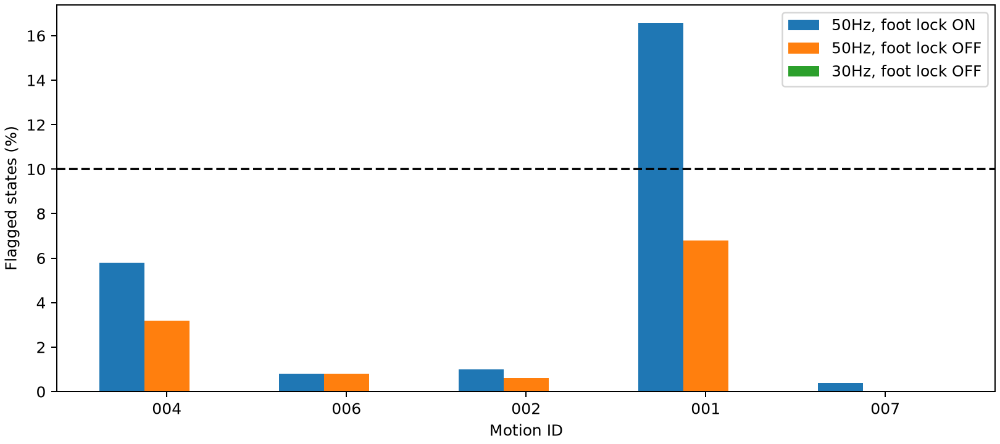

2026년 10월 29일 · 동일한 CALM 모션 5개 · TT 00000011/e000
발을 접지 구간의 평균 위치에 고정하는 보정이 힘·토크 불일치를 키우는지, 원본 30Hz 유지가 어떤 차이를 만드는지 확인했다. 기존 50Hz·보정 켬, 50Hz·보정 끔, 30Hz·보정 끔을 비교했다. 30Hz에서는 원본의 301개 상태를 보간 없이 사용했다. 모든 조건의 관절 토크 한계는 33.5N·m다.
발 목표를 접지 위치에 고정하거나 그 보정량을 공중 구간에 전파하는 과정만 껐다. 형상 변환에 필요한 역기구학, 몸통 높이 평활화와 접촉 구간 정리는 유지했다. 따라서 모든 보정을 없앤 실험은 아니다. 저장된 원본은 그대로 보존했다.
기존 4/5 통과에서 보정 제거 후 두 조건 모두 5/5로 바뀌었다. 아래는 역동역학 불일치 비율이며 허용 기준은 10% 이하다. 모든 조건에서 관절 범위 초과는 사실상 0이었다.
| 모션 | 50Hz·보정 켬 | 50Hz·보정 끔 | 30Hz·보정 끔 |
|---|---|---|---|
| calm_random_004 | 5.79% | 3.19% | 0.00% |
| calm_random_006 | 0.80% | 0.80% | 0.00% |
| calm_random_002 | 1.00% | 0.60% | 0.00% |
| calm_random_001 | 16.57% | 6.79% | 0.00% |
| calm_random_007 | 0.40% | 0.00% | 0.00% |

같은 50Hz에서 보정만 끄면 001의 불일치 비율이 16.57%에서 6.79%로 감소했다. 발 고정 보정이 현재 계산상의 불일치에 기여한다는 근거다. 30Hz 원본 유지 조건에서는 다섯 모션 모두 불일치 상태가 0개였다. 다만 주기를 바꾸면 차분·평활화로 계산하는 가속도도 달라진다. 현재 평활화 창은 프레임 수가 고정돼 있어 30Hz에서 더 긴 시간을 평활한다. 그러므로 30Hz의 결과를 보간 제거만의 효과나 실제 물리 정확도의 향상으로 단정할 수 없다.
30Hz·보정 끔의 접지 발 평균 수평 속도는 약 0.49~0.61m/s였다. 기존 보정 켬에서는 약 0.001~0.045m/s였다. 불일치 비율은 낮아졌지만 미끄러짐은 크게 남아 있다. 역동역학 검사는 접지 발의 힘과 필요한 토크를 계산하지만 지지 발이 실제로 정지해 있어야 한다는 조건을 완전히 검증하지 않는다. 따라서 0%를 물리 수행 성공으로 해석하면 안 된다. 평균 발 목표 오차 약 0.20~0.22mm 역시 움직이는 목표를 기하학적으로 잘 맞췄다는 뜻이다.
기존 추종 환경의 기본 제어 주기 0.02초에 맞추기 위한 선택이었다. 30Hz를 50Hz로 보간해도 새로운 측정 정보가 생기지 않는다. 30Hz 레퍼런스 사용은 가능하지만 학습·평가의 제어 주기를 1/30초로 맞추고, 물리 계산 간격은 제어 주기를 정수 개로 나누도록 설정해야 한다. 예를 들어 1/300초씩 10회 계산하면 제어 1회가 된다. 기본 물리 간격 0.005초를 그대로 쓰면 반올림으로 실제 시간과 레퍼런스 시간이 어긋날 수 있다.
30Hz·발 고정 없음 레퍼런스로 실제 TT 추종 실험을 진행해 생존, 추종 오차와 접지 미끄러짐을 별도로 확인할 수 있다. 이번 비교에서는 물리 시뮬레이션 실행이나 PPO 학습은 하지 않았다.